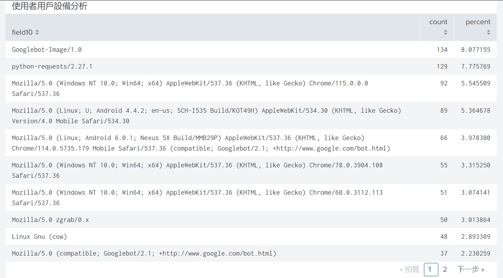

設定 Fortigate 防火牆，包括基本的網路設定、安全規則、NAT 轉送等，設定防火牆規則以允許特定端口和協議，確保只有必要的服務能夠通過防火牆。
Debian 伺服器設定設定基本的系統，包括網路設定、用戶帳戶管理，安裝並設定所需的伺服器軟體，包括web伺服器（如 Apache2）、資料庫伺服器、檔案伺服器等。設定防火牆規則以允許外部訪問所需的端口，例如 HTTP 的 80/443 端口，資料庫的相應端口，以及您的個人網站所需的連接埠。
持續維運使用splunk監控伺服器和防火牆的運行狀態，確保正常運行。
定期更新伺服器軟體和作業系統，以確保其安全性和穩定性。
通過splunk分析防火牆日誌，可以實時監控網絡中的流量情況，包括源IP地址、頻寬及流量等信息，從而及時發現異常或可疑活動，並透過可視化的繪圖快速了解目前設備及網路安全。
網頁日誌分析通過splunk分析網站的訪問量、訪問來源、瀏覽器類型等，以了解網站的狀態和流量情況，並解決網站的問題和技術故障。
連結作品網頁  123